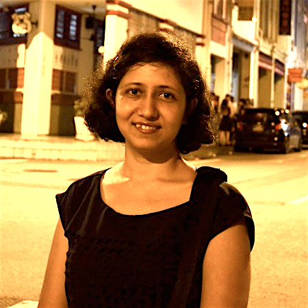

Chitralekha Gupta
Senior Research Fellow · School of Computing, National University of Singapore
I build evidence-based AI systems at the intersection of human-computer interaction, audio signal processing, and wearable sensing — translating advances in generative models and multimodal AI into tools that people can use in everyday contexts. My work spans real-world audio intelligence, assistive technologies, wearable cognition, health-oriented explainable AI, and technology translation through entrepreneurship.

Research Projects
Selected projects, ordered by current focus.
News & Highlights
Recent awards, grants, and accepted papers.
GrantAwarded the prestigious NRF Translational & Innovation Grant. I serve as Co-PI on this exciting project.
PaperTwo full papers accepted to ACM CHI 2026:
• “Feeling the Facts: Real-time wearable fact-checkers can use nudges to reduce user belief in false information”
• “Beyond Descriptions: A Generative Scene2Audio Framework for Blind and Low-Vision Users to Experience Vista Landscapes”
PaperDroneAudioset accepted at NeurIPS 2025 (Datasets & Benchmarks track).
AwardReceived the Innovation Fellow Award from NUS Enterprise.
AwardBest Paper Award at IEEE VR 2024 for VR.net.
GrantAwarded Singapore–France MinDef grant on blind-drone human–swarm interaction.
GrantAwarded MOE Tier-1 / NUHS Seed Grant on explainable dysarthric speech assessment.
RankPlaced 3rd at the DCASE Challenge 2023 (Foley Sound Synthesis task).
RankPlaced 1st at MIREX for lyrics alignment and transcription (two consecutive years).
Selected Publications
Representative works. Full list on Google Scholar.
-
ACM CHI 2026
-
ACM CHI 2026
-
NeurIPS 2025 — Datasets and Benchmarks Track
-
Interspeech 2025
-
ACM CHI 2025 — Extended Abstract
-
ACM CHI 2025
-
VR.net: A Real-world Dataset for Virtual Reality Motion Sickness Research Best Paper — IEEE VRIEEE VR 2024
-
Proceedings of the ACM on Interactive, Mobile, Wearable and Ubiquitous Technologies (IMWUT), 2024
-
IEEE/ACM Transactions on Audio, Speech, and Language Processing (TASLP), 2023
-
ICASSP 2023
-
International Journal of Human–Computer Interaction (IJHCI), 2023
-
IEEE/ACM Transactions on Audio, Speech, and Language Processing (TASLP), 2022
-
IEEE/ACM Transactions on Audio, Speech, and Language Processing (TASLP), 2022
-
ISMIR 2022
-
Interspeech 2019
-
ICASSP 2019 (*equal contributors)
-
SMC 2021
-
APSIPA Transactions on Signal and Information Processing, 2018
-
Perceptual Evaluation of Singing Quality Best Student PaperAPSIPA ASC 2017
-
ISMIR 2017